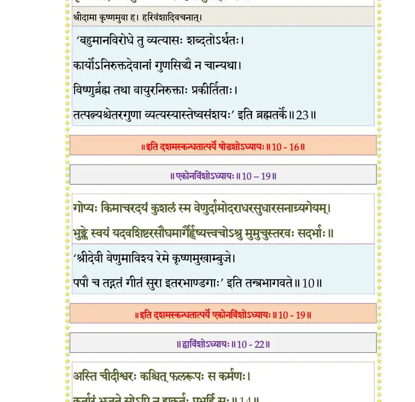

स्कन्ध 10 · अध्याय 16
श्लोक १
श्रीशुक उवाच–
व्रजे विक्रीडतोरेवं गोपालच्छद्मरूपिणोः ।
ग्रीष्मो नामर्तुरभवन्नातिप्रेयान् शरीरिणाम्।। १ ।।
व्रजे विक्रीडतोरेवं गोपालच्छद्मरूपिणोः ।
ग्रीष्मो नामर्तुरभवन्नातिप्रेयान् शरीरिणाम्।। १ ।।
श्लोक २
स च वृन्दावनगुणैर्वसन्त इव लक्षितः ।
यत्रास्ते भगवान् साक्षाद् रामेण सह केशवः।। २ ।।
यत्रास्ते भगवान् साक्षाद् रामेण सह केशवः।। २ ।।
श्लोक ३
यत्र निर्खरनिर्ह्रादनिवृत्तस्वनखिल्लिकम् ।
शश्वत् तच्छीकरैर्जुष्टं द्रुमपिप्पलमण्डितम्।। ३ ।।
शश्वत् तच्छीकरैर्जुष्टं द्रुमपिप्पलमण्डितम्।। ३ ।।
श्लोक ४
सरित्सरःप्रस्रवणोर्मिवायुना कह्लारकञ्जोत्पलरेणुहारिणा ।
न विद्यते यत्र वनौकसां दवो निदाघवह्न्यर्कभवोऽतिशाद्वले।। ४ ।।
न विद्यते यत्र वनौकसां दवो निदाघवह्न्यर्कभवोऽतिशाद्वले।। ४ ।।
श्लोक ५
अगाधतोयह्रदिनीतटेरुहैर्द्रवत्पुलिन्याः पुलिनैः समन्ततः ।
न यत्र चण्डांशुकरा विषोल्बणा भुवो रसं शाद्वलितं निगृह्णते।। ५ ।।
न यत्र चण्डांशुकरा विषोल्बणा भुवो रसं शाद्वलितं निगृह्णते।। ५ ।।
श्लोक ६
श्रीमद्वनं कुसुमितं नदच्चित्रमृगद्विजम् ।
गायन्मयूरभ्रमरं कूजत्कोकिलसारसम्।। ६ ।।
गायन्मयूरभ्रमरं कूजत्कोकिलसारसम्।। ६ ।।
श्लोक ७
क्रीडिष्यमाणस्तत् कृष्णो भगवान् बलसंयुतः ।
वेणुं विरणयन् गोपैर्गोधनैः संवृतोऽविशत्।। ७ ।।
वेणुं विरणयन् गोपैर्गोधनैः संवृतोऽविशत्।। ७ ।।
श्लोक ८
प्रवालबर्हस्तबकस्रग्धातुकृतभूषणाः ।
रामकृष्णादयो गोपा ननृतुर्युयुधुर्जगुः।। ८ ।।
रामकृष्णादयो गोपा ननृतुर्युयुधुर्जगुः।। ८ ।।
श्लोक ९
कृष्णस्य नृत्यतः केचिज्जगुः केचिदवादयन् ।
वेणुं पाणितलैः शृङ्गैः प्रशशंसुरथापरे।। ९ ।।
वेणुं पाणितलैः शृङ्गैः प्रशशंसुरथापरे।। ९ ।।
श्लोक १०
गोपजातिप्रतिच्छन्ना देवा गोपालरूपिणः ।
ईडिरे कृष्णरामौ च नटा इव नटं नृप।। १० ।।
ईडिरे कृष्णरामौ च नटा इव नटं नृप।। १० ।।
श्लोक ११
भ्रामणैर्लङ्घनैः क्षेपैरास्फोटनविकर्षणैः ।
चिक्रीडतुर्नियुद्धेन काकपक्षधरावुभौ।। ११ ।।
चिक्रीडतुर्नियुद्धेन काकपक्षधरावुभौ।। ११ ।।
श्लोक १२
क्वचिन्नृत्यत्सु चान्येषु गायकौ वादकौ स्वयम् ।
शशंसतुर्महाराज साधु साध्विति वादिनौ।। १२ ।।
शशंसतुर्महाराज साधु साध्विति वादिनौ।। १२ ।।
श्लोक १३
क्वचिद् बिल्वैः क्वचित् कुम्भैः क्व चामलकमुष्टिभिः ।
अस्पृश्यनेत्रबन्धाद्यैः क्वचिन्मृगखगेहया।। १३ ।।
अस्पृश्यनेत्रबन्धाद्यैः क्वचिन्मृगखगेहया।। १३ ।।
श्लोक १४
क्वचिच्च दर्दुरप्लावैर्विविधैरुपहासकैः ।
क्वचित् तथाऽऽन्दोलिकया कर्हिचिन्नृपचेष्टया।। १४ ।।
क्वचित् तथाऽऽन्दोलिकया कर्हिचिन्नृपचेष्टया।। १४ ।।
श्लोक १५
एवं तौ लोकसिद्धाभिः क्रीडाभिश्चेरतुर्वने ।
नद्यद्रिद्रोणिकुञ्जेषु पुलिनेषु सरस्सु च।। १५ ।।
नद्यद्रिद्रोणिकुञ्जेषु पुलिनेषु सरस्सु च।। १५ ।।
श्लोक १६
पशूंश्चारयतो गोपैस्तद्वने रामकृष्णयोः ।
गोपरूपी प्रलम्बोऽगादसुरस्तज्जिघांसया।। १६ ।।
गोपरूपी प्रलम्बोऽगादसुरस्तज्जिघांसया।। १६ ।।
श्लोक १७
तं विद्वानपि दाशार्हो भगवान् सर्वदर्शनः ।
अन्वमोदत तत्सख्यं वधं तस्य विचिन्तयन्।। १७ ।।
अन्वमोदत तत्सख्यं वधं तस्य विचिन्तयन्।। १७ ।।
श्लोक १८
तत्रोपाहूय गोपालान् कृष्णः प्राह विहारवित् ।
हे गोपा विहरिष्यामो द्वन्द्वीभूय यथायथम्।। १८ ।।
हे गोपा विहरिष्यामो द्वन्द्वीभूय यथायथम्।। १८ ।।
श्लोक १९
तत्र चक्रुः परिवृढौ गोपा रामजनार्दनौ ।
कृष्णसङ्घट्टिनः केचिद् गोपा रामस्य चापरे।। १९ ।।
कृष्णसङ्घट्टिनः केचिद् गोपा रामस्य चापरे।। १९ ।।
श्लोक २०
आचेरुर्विविधाः क्रीडा वाह्यवाहकलक्षणाः ।
तत्रारोहन्ति जेतारो वहन्ति च पराजिताः।। २० ।।
तत्रारोहन्ति जेतारो वहन्ति च पराजिताः।। २० ।।
श्लोक २१
वहन्तो वाह्यमानाश्च चारयन्तश्च गोधनम् ।
भाण्डीरकं नाम वटं जग्मुः कृष्णपुरोगमाः।। २१ ।।
भाण्डीरकं नाम वटं जग्मुः कृष्णपुरोगमाः।। २१ ।।
श्लोक २२
रामसङ्घट्टिनो ये तु श्रीदामवृषभादयः ।
क्रीडायां जयिनस्तांस्तानूहुः कृष्णादयो नृप।। २२ ।।
क्रीडायां जयिनस्तांस्तानूहुः कृष्णादयो नृप।। २२ ।।
श्लोक २३
उवाह कृष्णो भगवान् श्रीदामानं पराजितः ।
वृषभं भद्रसेनस्तु प्रलम्बो रोहिणीसुतम्।। २३ ।।
वृषभं भद्रसेनस्तु प्रलम्बो रोहिणीसुतम्।। २३ ।।
भागवततात्पर्यनिर्णय

श्लोक २४
अविषह्यं मन्यमानः कृष्णं दानवपुङ्गवः ।
वहन् द्रुततरं प्रागादवरोहणतः परम्।। २४ ।।
वहन् द्रुततरं प्रागादवरोहणतः परम्।। २४ ।।
श्लोक २५
तमुद्वहन् धरणिधरेन्द्रगौरवं महासुरो विगतरयो निजं वपुः ।
स आस्थितः पुरटपरिच्छदो बभौ तटिद्युमानुडुपतिवाडिवाम्बुदः।। २५ ।।
स आस्थितः पुरटपरिच्छदो बभौ तटिद्युमानुडुपतिवाडिवाम्बुदः।। २५ ।।
श्लोक २६
निरीक्ष्य तद्वपुरम्बरेचरं प्रदीप्तदृग् भृकुटितटोग्रदंष्ट्रकम् ।
ज्वलच्छिखं कटककिरीटकुण्डलत्विषाऽद्भुतं हलधर ईषदत्रसत्।। २६ ।।
ज्वलच्छिखं कटककिरीटकुण्डलत्विषाऽद्भुतं हलधर ईषदत्रसत्।। २६ ।।
श्लोक २७
अथागतस्मृतिरभयो रिपुं बलो विहायसोर्ध्वं च हरन्तमात्मनः ।
रुषाऽहनच्छिरसि दृढेन मुष्टिना सुराधिपो गिरिमिव वज्ररंहसा।।२७।।
रुषाऽहनच्छिरसि दृढेन मुष्टिना सुराधिपो गिरिमिव वज्ररंहसा।।२७।।
श्लोक २८
स आहतः सपदि विशीर्णशीर्षको मुखाद् वमन् रुधिरमपस्मृतोऽसुरः ।
महारवं व्यसुरपतत् समीरयन् गिरिर्यथा मघवत आयुधाहतः।। २८ ।।
महारवं व्यसुरपतत् समीरयन् गिरिर्यथा मघवत आयुधाहतः।। २८ ।।
श्लोक २९
दृष्ट्वा प्रलम्बं निहतं बलेन बलशालिना ।
गोपाः सुविस्मिता आसन् साधु साध्विति राविणः ।। २९।।
गोपाः सुविस्मिता आसन् साधु साध्विति राविणः ।। २९।।
श्लोक ३०
आशिषोऽभिगृणन्तस्ते प्रशशंसुस्तदर्हणम् ।
प्रेत्यागतमिवालिङ्ग्य प्रेमविह्वलचेतसः।। ३० ।।
प्रेत्यागतमिवालिङ्ग्य प्रेमविह्वलचेतसः।। ३० ।।
श्लोक ३१
पापे प्रलम्बे निहते देवाः परमनिर्वृताः ।
अभ्यवर्षन् बलं माल्यैः शशंसुः साधु साध्विति।। ३१ ।।
अभ्यवर्षन् बलं माल्यैः शशंसुः साधु साध्विति।। ३१ ।।
।। इति श्रीमद्भागवते दशमस्कन्धे षोडशोऽध्यायः ।।